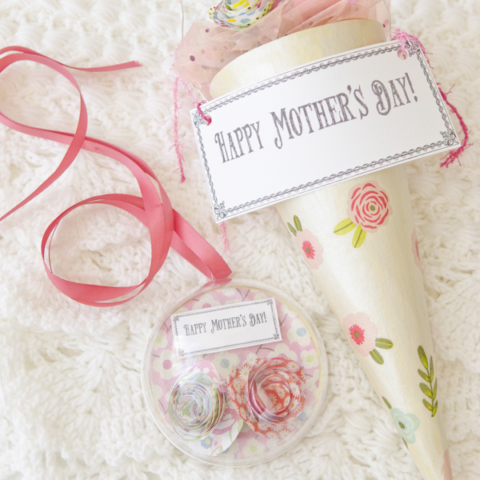

Inspired by Mom Soldered Ornaments

I love putting together soldered slide images! A simple sentiment and some patterned paper transform these glass slides into tiny pieces of art.
Mothers will love the personalized touch to these simple framed works of art.
More at Stampington & Company
A Mother’s Day Floral Bouquet

Shopping Christmas holiday closeouts can be rewarding! That’s when I saw the clear plastic
ornaments and a “Happy New Year” coaster pack. A cardboard Christmas tree flipped upside down is the perfect cone for a Mother’s Day bouquet.
These projects are a finished gift that any mother would be happy to display well past Mother’s Day!
More at Stampington & Company